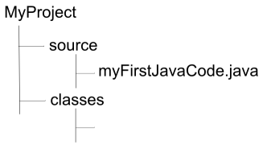
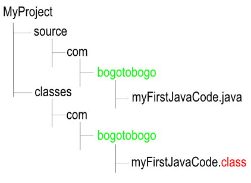
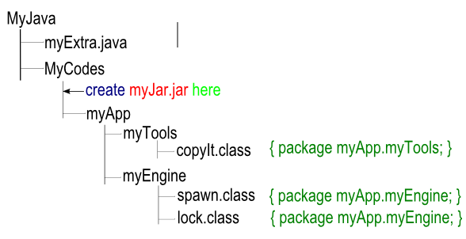

-classpath
The classpath itself has an argument of com:. and -g.
two java files myFirstCode.java and mySecondCode.java
Here is the list of options available.
TABLE
-g
Generate all debugging info.
-g:none
Generate no debugging info.
-g:{lines,vars,source}
Generate only some debugging info.
-verbose
Output messages about what the compiler is doing.
-nowarn
Generate no warnings.
-deprecation
Output source locations where deprecated APIs are used.
-classpath <path>
Specify where to find user class files and annotation processors.
-cp <path>
Specify where to find user class files and annotation processors.
-sourcepath <path>
Specify where to find input source files.
-bootclasspath <path>
Override location of bootstrap class files.
-extdirs <dirs>
Override location of installed extensions.
-endorseddirs <dirs>
Override location of endorsed standards path.
-proc:{none,only}
Control whether annotation processing and/or compilation is done.
-processor <class1> [,<class2>...]
Names of the annotation processors to run; bypasses default discovery process.
-processorpath <path>
Specify where to find annotation processors.
-d <directory>
Specify where to place generated class files.
-s <directory>
Specify where to place generated source files.
-implicit:{none,class}
Specify whether or not to generate class files for
implicitly referenced files.
-encoding <encoding>
Specify character encoding used by source files.
-source <release>
Provide source compatibility with specified release.
-target <release>
Generate class files for specific VM version.
-version
Version information.
-help
Print a synopsis of standard options.
-Akey[=value]
Options to pass to annotation processors.
-X
Print a synopsis of nonstandard options.
-J<flag>
Pass <flag> directly to the runtime system.
Compiling - javac -d
The compiler, by default, puts a *.class file in the same directory as the *.java source file. This is not a problem for small project, but once we're working on a project of any size at all, we'll want to keep our *.java files separated from *.class files. This helps with version control, testing, deployment, and so forth.
The -d option lets us tell the compiler in which directory to put the *.class files it generates. Here, the d stands for destination.
Let's suppose we have the following directory structure:

The following command issued from the MyProject directory will compile MyFirstJavaCode.java and put the resulting MyFirstJavaCode.class file into the classes directory. Note that we're assuming that MyFirstJavaCode.java does not have any package statement.
cd MyProject
javac -d classes source/MyFirstJavaCode.java
Now, let's how packages work with the javac -d option. Suppose we have the following *.java file in the directory structure in the picture below:
package com.bogotobogo;
public class MyFirstJavaCode {
public static void main(String[] args) {
System.out.println("This is my first java");
}
}

If we were in the source directory, we would compile MyFirstJavaCode.java and put the resulting MyFirstJavaCode.class file into the classes/com/bogotobogo directory by using the following command:
The command says: "To set the destination directory, cd back to the MyProject directory then cd into the classes directory, which will be our destination. Then, compile the file named MyFirstJavaCode.java. Next, put the resulting put the resulting MyFirstJavaCode.class file into the directory structure that matches its package, in our case, classes/com/bogotobogo directory." Since MyFirstJavaCode.class is in a package, the compiler knows it and put the resulting *.class file into the classes/com/bogotobogo directory.
One more thing about the package. Sometimes the javac can help us out by building directories it needs. Suppose we have the following directory structure:
The compiler will build two directories com and com/bogotobogo in order to put the resulting MyFirstJavaCode.class file into the correct package directory, com/bogotobogo.
Note that, when we use -d, we'll get a compile error if the destination directory we specify doesn't exist. For example, if the class directory did not exist, the compiler would issue a message something like this:
javac: directory not found: ../classes
Usage: javac
use -help for a list of possible options
Launching with java
We use java command to invoke the Java virtual machine. The synopsis of the command is:
java [options] class [args ...] : to execute a class
java [options] -jar jarfile [args ...] : to execute a jar file
javaw [ options ] class [ args... ] : to execute a class
javaw [ options ] -jar file.jar [ args ... ] : to execute a jar file
The java tool launches a Java application. It does this by starting a Java runtime environment, loading a specified class, and invoking that class's main method. The method declaration must look like the following:
public static void main(String args[])
The method must be declared public and static, it must not return any value, and it must accept a String array as a parameter. By default, the first non-option argument is the name of the class to be invoked. A fully-qualified class name should be used. If the -jar option is specified, the first non-option argument is the name of a JAR archive containing class and resource files for the application, with the startup class indicated by the Main-Class manifest header.
The Java runtime searches for the startup class, and other classes used, in three sets of locations: the bootstrap class path, the installed extensions, and the user class path.
Non-option arguments after the class name or JAR file name are passed to the main function.
The javaw command is identical to java , except that with javaw there is no associated console window. Use javaw when you don't want a command prompt window to appear. Thejavaw launcher will, however, display a dialog box with error information if a launch fails for some reason.
The [options] and [args] parts of the java command are optional and they can both have multiple values. We must specify exactly one class file to execute. The java command assumes we're talking about a .class file so that we don't specify the .class extension on the command line:
What the command is telling: "Create a system property called myProperty and set its value to myPropValue. Then, launch the file named MyFirstJavaCode.class and sent it two String arguments whose values are args1 and args2.
classpath
Classpath consists of a variable number of directory locations separated by delimiters. For Unix OS, forward slashes are used to construct directory locations and the separator is the colon(:). For example:
It specifies two directories in which classes can be found: /com/bogotobogo/dir1 and /com/bogotobogo/dir1/dir1A. In both cases, these directories are absolutely tied to the root of the file system. We need to remember that when we specify a subdirectory, we're not specifying the directories above it. For example, in the previous example, the directory /com will not be searched.
It is very common that java or javac complains about the class file it can't find even though the file is in the current directory. When searching for class files, the java and javac commands don't search the current directory by default. We must tell them to search there. The way to tell java or javac to search in the current directory is to add a dot(.) to the classpath:
Note that we're talking about *.class files not *.java files. When we're telling javac which *.java file to compile, javac looks in the current directory by default.
The last thing worth mentioning is that the java command allows us to abbreviate -classpath with -cp.
jar Files
Once we've built our application, we may want to bundle it up so that it's easy to distribute and install to other machine. We use jar (Java ARchive) files to serve those purposes. The jar files are used to compress data and to archive data.
Here's an example of an application with classes in different packages:

We can create a sing jar file that contains all of the files in myApp and retains myApp's directory structure. Once the jar file is created, it can be moved from place to place, from machine to machine, and all of the classes in the jar file can be accesses via classpaths, by java and javac without even un-JAR-ing the jar file.
Let's make the current directory MyCodes and then make a jar file called myJar.jar:
cd MyCodes
jar -cf myJar.jar myApp
The jar command will create a jar file called myJar.jar and it will contain the myApp directory and myApp's entire subdirectory tree and files. We can look at the contents of the jar file with the following command:
jar {ctxui}[vfm0Me] [jar-file] [manifest-file] [entry-point] [-C dir] files ...
Here is the list of options available for the jar command.
TABLE
-c
create new archive.
-t
list table of contents for archive.
-x
extract named (or all) files from archive.
-u
update existing archive.
-v
generate verbose output on standard output.
-f
specify archive file name.
-m
include manifest information from specified manifest file.
-e
specify application entry point for stand-alone application
bundled into an executable jar file.
-0
store only; use no ZIP compression.
-M
do not create a manifest file for the entries.
-i
generate index information for the specified jar files.
-C
change to the specified directory and include the following file.
If any file is a directory then it is processed recursively.
Here are some examples of using the jar command:
jar cvf classes.jar fileA.class fileB.class
to archive two class files into an archive called classes.jar
jar cvfm classes.jar mymanifest -C dirA/ .
use an existing manifest file 'mymanifest' and archive all the files in the dirA/ directory into 'classes.jar'
Finding a jar File
Finding a jar file using a classpath is similar to finding a package file in a classpath. The difference is that when we specify a path for a jar file, we must include the name of the jar file at the end of the path.
Suppose, we want to compile myExtra.java in the MyJava directory. But myExtra.java needs access to a class contained in myJar.jar. To compile myExtra.java, we do:
cd MyJava
javac -classpath MyCodes/myJar.jar myExtra.java
Compare the use of the jar file to using a class in a package. If myExtra.java needed to use classes in the myApp.myTools package, and the class was not in a jar, we should issue the following command:
cd MyJava
javac -classpath MyCodes myExtra.java
Note that when using a classpath, the last directory in the path must be the super-directory of the root directory for the package. Also note that myApp can be the root directory for more than one package (myApp.myTools and myApp.myEngine), and the java and the javac commands can find what they need across multiple packages like the example. So, if MyCodes is on the classpath and MyCodes is the super-directory of myApp, then classes in both the myApp.myTools and myApp.myEngine packages will be found.
Ph.D. / Golden Gate Ave, San Francisco / Seoul National Univ / Carnegie Mellon / UC Berkeley / DevOps / Deep Learning / Visualization
Sponsor Open Source development activities and free contents for everyone.